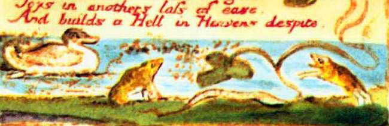

‘Aşk memnun etmeye çalışmaz Kendini,
Ne de umursar kendi iyiliğini,
Ki başkasına verir tesellisini,
Ve kederinde Cehennemin, bir Cennet kurar.’
Böyle dedi, sığırların çiğnediği
Bir topak Kesek,
Ama şakıdı ırmaktaki Çakıl Taşı,
Şu uyaklı dizeleri:
‘Aşk yalnızca Özü arar memnun etmek,
Kendi sevinciyle kuşatmak için bir diğerini,
Başkalarının sevincinde yitirir teselliyi,
Ve nefretinde Cennetin, bir Cehennem kurar.’
